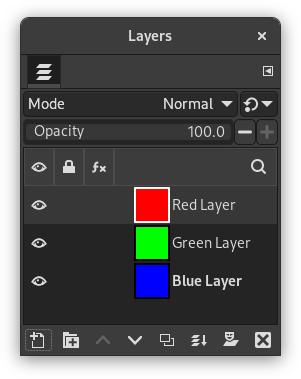
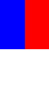
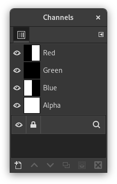
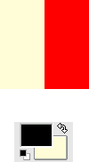
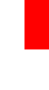
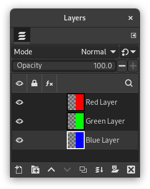

Índice
Você pode pensar nas camadas como uma pilha de slides. Usando camadas, você pode construir uma imagem de várias partes conceituais, cada uma das quais pode ser manipulada sem afetar qualquer outra parte da imagem. As camadas são empilhadas umas sobre as outras. A camada inferior é o plano de fundo da imagem, e os componentes em primeiro plano da imagem ficam acima dela.


Não há limite para o número de camadas que uma imagem pode ter, apenas a quantidade de memória disponível no sistema. Não é incomum que usuários avançados trabalhem com imagens contendo dezenas de camadas. Você pode agrupar camadas para facilitar seu trabalho, e há muitos comandos para lidar com camadas.
The organization of layers in an image is shown in the Layers dialog. How it works is described in detail in the Layers Dialog section, but we will touch some aspects of it here, in relation to the layer properties that they display.
Each open image can have one or more active drawables. A “drawable” is a GIMP concept that includes layers, but also several other items, such as channels, layer masks, and the selection mask.
Basically, a “drawable” is anything that can be drawn on with painting tools. If a layer is currently active (i.e. it is selected), it is shown highlighted in the Layers dialog. If only one layer is selected, its name is shown in the status area of the image window.
To activate a layer click it. To select multiple layers, use the common key modifiers Shift for selecting a range, and Ctrl for adding or removing one layer from the selection. If none of the layers are highlighted, it means the active drawable is something else than a layer.
The main menu has a Layer submenu containing commands that affect the active layer or layers of the image. The context menu of the Layers Dialog has even more commands. This menu can be accessed by right-clicking on a layer.
There are several types of layers. The most common is the raster layer, which is the default. Other layer types are text layers, vector layers and link layers. Each of these have extra properties and commands specific to their purpose.
Cada camada em uma imagem tem alguns atributos importantes:
- Nome
-
Every layer has a name. This is assigned automatically when the layer is created, but you can change it. You can change the name of a layer either by double-clicking on it in the Layers dialog, or by right-clicking there, and then selecting in the menu that appears.
- Presença ou ausência de um canal Alfa
-
An alpha channel encodes information about how transparent a layer is at each pixel. It is visible in the Channels dialog: white is complete opacity, black is complete transparency and gray levels are partial transparencies.
A camada de fundo é especial. Se você acabou de criar uma nova imagem, ainda tem apenas uma camada, que é uma camada de fundo. Se a imagem foi criada com um tipo de preenchimento opaco, essa camada não tem um canal Alpha. Se você adicionar uma nova camada, mesmo com um tipo de preenchimento opaco, um canal Alfa é automaticamente criado e isso se aplica a todas as camadas além da camada de fundo. Para se ter uma camada de fundo com transparência, você pode criar a sua nova imagem com a opção “Preencher com” igual a“Transparência” (nas opções avançadas do diálogo de nova imagem em Arquivo->Nova), ou você usa o comando Adicionar canal alfa.
Se você adicionar uma nova camada, mesmo com um tipo de preenchimento opaco, um canal Alfa é adicionado automaticamente à camada.
Todas as outras camadas exceto a camada inferior da imagem em geral tem um canal Alpha, mas você não pode ver uma representação em tons de cinza dos valores desse canal. Veja Alpha no Glossário para obter mais informações.
Figura 8.2. Exemplo de canal Alfa: Imagem básica

Original image.

The image has three layers painted with pure 100% opaque Red, Green, and Blue. The current layer is the red one.

In the Channels dialog, the added Alpha channel is white because the image is not transparent since there is a 100% opaque (red) layer. As the current (red) layer is 100% opaque, there is no green and no blue so their corresponding channels are black.
Figura 8.3. Exemplo de canal Alfa: Uma camada transparente

The left part of the first layer has been made transparent (via Seção 2.2, “Seleção Retangular”, then → ).

The second layer, green, is visible.

The Alpha channel is still white, since there is an opaque layer in this part of the image.
Figura 8.4. Exemplo de canal Alfa: Duas camadas transparentes

The left part of the second layer has been made transparent.

The third layer, blue, is visible through the first and second layers.

The Alpha channel is still white, since there is an opaque layer in this part of the image.
Figura 8.5. Exemplo de canal Alfa: Três camadas transparentes

The left part of the third layer has been cleared. In this case, the Clear command works like the Eraser and uses the Background color of Toolbox.

The left part of the third layer is opaque, because the background layer has no Alpha channel.

The Alpha channel is still white.
Figura 8.6. Exemplo de canal Alfa: Canal Alfa adicionado ao fundo

We used the → → command on the (blue) background layer. The left part of the image has become fully transparent and has the color of the page on which the image is shown.

The left part of the blue layer has become transparent.

The left part of the Alpha Channel thumbnail is black (transparent) in the Channels dialog.
- Layer mode
-
The layer mode is determined by the image mode (see previous section), and the presence or absence of an alpha channel. GIMP currently supports RGB, RGBA, Gray, GrayA, Indexed, and IndexedA.
The main reason this matters is that some filters (in the menu) only accept a subset of layer modes, and appear disabled in the menu if the active layer does not have a supported mode. Often you can rectify this either by changing the mode of the image, or by adding or removing an alpha channel.
-
 Visibilidade
Visibilidade
-
You can hide a layer from affecting the end result of your image by clicking on the eye symbol in the Layers dialog. This is called “toggling the visibility” of the layer. Most operations on an image treat toggled-off layers as if they do not exist.
When you work with images containing many layers, with varying opacities, you often can get a better picture of the contents of the layer you want to work on by hiding some of the other layers.
![[Dica]](images/tip.png)
Dica Se você clicar segurando Shift sobre o símbolo do olho, isso fará com que todas as outras camadas, exceto a que você clicar, fiquem ocultas.
- Camada ativa
-
Normalmente, você ativa uma camada, para trabalhar nela, clicando-a na lista de camadas. Quando você tem muitas camadas, não é fácil descobrir a qual camada um elemento da imagem pertence: então, pressione Alt e clique com a roda do mouse neste elemento para ativar sua camada. As camadas disponíveis serão percorridas (começando pela superior) enquanto a Alt estiver pressionada e a camada selecionada será exibida temporariamente na barra de status.
-
 Layer Lock Settings
Layer Lock Settings
-
If you click to the right of the eye icon, you can select the lock settings for the layer.
-
 Layer Effects
Layer Effects
-
Directly to the left of the image thumbnail, you will see the Layer Effects icon if that layer has effects added to it.
See Using Layer Effects for more details.
- Tamanho e limites
-
In GIMP, the boundaries of a layer do not necessarily match the boundaries of the image that contains it. When you create text, for example, each text item belongs to its own separate layer, and the layer size is automatically adjusted to contain the text and nothing more.
Also, when you create a new layer using cut-and-paste, the new layer is sized just large enough to contain the pasted item. In the image window, the boundaries of the currently active layer are shown outlined with a black-and-yellow dashed line. When more than one layer is selected, it will show an outline of the square that encloses all the selected layers.
The main reason why this matters is that you cannot do anything to a layer outside of its boundaries, unless you enabled Expand Layers in the Paint Tool Options. If this causes you problems, you can alter the dimensions of the layer using any of several commands that you can find near the bottom of the menu.
![[Nota]](images/note.png)
Nota A quantidade de memória que uma camada consome é determinada por suas dimensões, e não seu conteúdo. Então, se você estiver trabalhando com imagens grandes ou imagens que contêm muitas camadas, pode ter sentido deixar as camadas com o menor tamanho possível, embora em geral isso não faça diferença para o trabalho cotidiano. Se fizer, é melhor pensar em expandir a memória da sua máquina de trabalho.
- Opacidade
-
A opacidade de uma camada determina a medida que permite que as cores das camadas abaixo dela na pilha de camadas apareçam. A opacidade varia de 0 a 100, onde 0 significa transparência completa, e 100 significa opacidade completa.
- Modo
-
O modo de uma camada determina como as cores da camada são combinadas com as cores das camadas abaixo para a produção de um resultado visível. Este é um conceito suficientemente complexo e importante, para merecer uma seção própria, que se segue. Veja Seção 2, “Modos de Camada”.
- Máscara de Camada
-
Além do canal alfa existe uma outra maneira de controlar a transparência de uma camada: adicionando uma máscara de camada, que é uma imagem em tons de cinza adicional associada à camada. Uma camada não tem uma máscara de camada de por padrão: ela deve ser especificamente adicionada. Máscaras de camada, e como trabalhar com elas, são descritas em mais detalhesna seção Máscara de Camada.